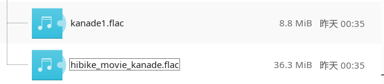

前两天成功在I卡上把AI翻唱的推理跑了起来，非常顺利，没有太多阻碍。而接下来的两天我一直在尝试自己训练。先说结论，在I卡上可以训练，但是如果Batch Size设置得比较小（比如说小于等于8），会出现诡异的玄学问题。
结果
这回我直接把结果放在第一节。总体来说，语音音色替换的效果比翻唱要好。可能是因为我的训练数据全是语音。
「気になります」
下面的音频第一句是AI替换后的久石奏，第二句是千反田原版。替换之后基本上没有什么违和感。
Yesterday
披头士的曲子，AI久石奏翻唱。仔细听可以听出很多瑕疵。
《新部长久石奏战前宣言》（大雾）
准备
首先按照我之前的文章使用Intel Arc A770和RVC模型进行AI翻唱配置好环境。这里仍然假设读者使用Linux和Docker。
我电脑的配置如下，如果实在无法复现，可能得从配置上找原因。
➜ ~ neofetch
-` nth233@lune
.o+` -----------
`ooo/ OS: Arch Linux x86_64
`+oooo: Kernel: 6.6.38-1-lts
`+oooooo: Uptime: 24 mins
-+oooooo+: Packages: 1883 (pacman), 13 (flatpak)
`/:-:++oooo+: Shell: zsh 5.9
`/++++/+++++++: Resolution: 2560x1440
`/++++++++++++++: DE: Plasma 6.1.2
`/+++ooooooooooooo/` WM: kwin
./ooosssso++osssssso+` Theme: Default [GTK2/3]
.oossssso-````/ossssss+` Icons: breeze [GTK2/3]
-osssssso. :ssssssso. Terminal: konsole
:osssssss/ osssso+++. Terminal Font: JetBrains Mono NL 12
/ossssssss/ +ssssooo/- CPU: AMD Ryzen 5 5600G with Radeon Graphics (12) @ 4.464GHz
`/ossssso+/:- -:/+osssso+- GPU: Intel DG2 [Arc A770]
`+sso+:-` `.-/+oso: Memory: 3114MiB / 15775MiB
`++:. `-/+/
.` `/
为了放置内存不足导致崩溃，我还开了8G大小的swap。
训练集
根据这个项目的建议，如果训练集质量较高，底噪较低，训练集总时长大概只需要5~10min就足够了。
所以我花了点时间把《誓言的终章》和京吹广播剧中，久石奏绝大部分的台词都剪出来了。（剪完之后小奏的声音快刻进我DNA了）

下面就是训练所用的音频（用于训练前需去掉背景音）
训练参数的调整
大部分参数请根据自己的需要调整，但是务必请将下图的Batch Size调到16（或者以上？）。Batch Size太大容易爆显存，但如果设为8或以下，会导致训练到一半的时候训练进程突然间毫无征兆地崩溃掉，原因不明。我把Batch Size设为16之后顺利跑通了训练。
然后按WebUI上的一键训练即可。
踩过的坑
删掉训练脚本中意义不大的代码
infer/modules/train.py
483行和498行的代码是无用的，计算g_norm_g和g_norm_d这两个变量的目的纯粹只是为了在Tensorboard里面看，计算它们却需要额外的时间。如果Batch
Size在8及以下的时候，进程经常崩溃在这两个位置（原因不明，应该和代码本身无关）。建议直接把这两处注释掉。
520行到这个If分支结尾为止，这整段代码纯粹是为了Tensorboard才加进来的。我不使用Tensorboard，就把这整段代码都删掉了。删掉之后消掉了一堆和matplotlib有关的warning。
训练过程中随机崩溃的问题
训练开始不久（一般在第1～3个epoch的时候），训练进程突然崩溃，有时没有报错，有时随机出现以下两条报错信息之一，均疑似与内存有关。
malloc(): unaligned tcache chunk detected
malloc(): smallbin double linked list corrupted
我一开始尝试过把Batch Size设为2、4、7、8，无一例外都引发了这个问题。并且可以确定我的内存空间是十分充足的。我发现Batch Size设得大些的时候，崩溃会来得晚一点，设为16之后问题就消失了。我无法解释这个现象，姑且认为是个玄学问题。